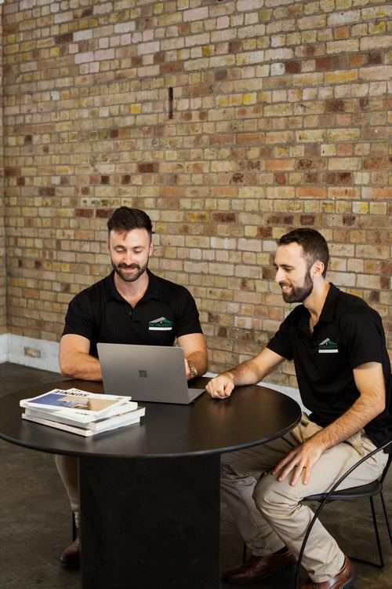

Buyers Agent
Ipswich
Why Ipswich is one of our top-ranked markets, and the data behind it. Independent. Data-driven. 100% on your side.
Key Facts

Directors' Summary
Ipswich is Queensland's fastest-growing city, and it sits roughly 40 kilometres from the Brisbane CBD, closer than some outer Brisbane suburbs. Its population grew 3.5% in the year to June 2025, faster than any other council in the state, and it is forecast to almost double to around 534,000 by 2046.
The appeal is simple: genuine affordability with capital-city access. Houses still sit well below every mainland eastern and southern capital, yet yields outperform Brisbane and the rental market is tight. Major engines like Greater Springfield, RAAF Amberley and Rheinmetall's defence manufacturing are adding jobs and demand at scale.
Most suburbs kept rising through the rate increases of recent years as vacancy stayed low and demand outran supply. We buy established houses in proven Ipswich pockets, on the data, and steer clear of flood-prone areas and oversupplied estates. No developer stock, no kickbacks.
High lights
Affordable, established houses, priced well below every mainland capital
Greater Springfield: Australia's largest privately built city, ~$18 billion invested
Queensland's fastest-growing city, set to almost double to 534,000 by 2046
A deep defence and logistics jobs base, anchored by RAAF Amberley
Location Map
Ipswich sits about 40 km west of the Brisbane CBD, a high-growth city in South East Queensland that is closer in than some outer Brisbane suburbs. It is less than 100 km to the Gold Coast and less than 150 km to the Sunshine Coast. The Brisbane to Ipswich rail line connects the city, with a planned Ipswich to Springfield Central transit corridor, and major road links run via the Cunningham, Centenary and Warrego highways. RAAF Base Amberley, Australia's largest operational air base, sits on the doorstep.
Future Prospects
Ipswich is being built at scale, with record investment in housing, defence, logistics and transport landing in the suburbs as jobs, demand and price support. The headline is Greater Springfield, Australia's largest privately built city, which sits inside the Ipswich LGA with around $18 billion invested to date and a build-out forecast near $85 billion, targeting about 52,000 jobs by 2030.
Ripley Valley is one of the country's largest growth areas, planned for roughly 135,000 residents across 50,000 dwellings, with Ripley repeatedly the city's fastest-growing suburb. On the jobs side, RAAF Amberley anchors the region, Rheinmetall builds the army's Boxer vehicles nearby in a $5.2 billion program, and Inland Rail plus the Ebenezer industrial area are expanding the freight and logistics base.
Development Projects
The pipeline is broad and already in the ground, from a privately built city and one of the country's largest growth areas to defence manufacturing, freight and a revitalised CBD. Ipswich City Council's 2025-26 budget alone is $678 million, and Brisbane 2032 investment to the east adds further regional uplift.
Eco nomy
Ipswich's economy is worth around $15 billion and is growing fast, led by health care and social assistance, education, manufacturing and public administration. Defence is a major anchor: RAAF Base Amberley is Australia's largest operational air base, and Rheinmetall builds the army's Boxer vehicles nearby.
Greater Springfield, the country's largest privately built city, and the Ebenezer industrial area add jobs in logistics, defence and services. The population is forecast to almost double to around 534,000 by 2046, one of the fastest growth rates in the nation.
For property, the equation is simple. A fast-growing population, a deepening jobs base and tight housing supply keep upward pressure on prices and rents.
Why We See Value
Everything here points the same way: genuine affordability today, with a deep jobs base and the state's fastest growth ahead. This is why Ipswich sits among our top-ranked markets.
Affordable, established housing below every capital
Yields above Brisbane, with stronger cashflow
Queensland's fastest-growing city
Tight supply, with historically low vacancy
A deepening defence, logistics and jobs base
Capital-city access at a regional price
Established Houses, Proven Pockets
We actively target around 20% of the suburbs in Ipswich. Not every suburb makes the cut, and within the ones that do, only certain pockets and streets do.
Our focus is established detached houses in proven, well-connected suburbs, close to infrastructure, jobs and amenity. We avoid flood-prone areas and oversupplied fringe estates. Land matters: the dwelling depreciates, the land appreciates, so position and land content drive long-term growth.
Most quality investment-grade houses in our target pockets now sit between $750,000 and $900,000 or more, with entry-level opportunities from around $620,000. Closer to the city, well-located houses on 450 m² stack up; further out we prefer 600 m² and above. Gross yields run around 3.6% to 4.0% on houses, higher on units and townhouses.
A JSC Investment Report means the work is done.
Five-stage due diligence and a 30-point checklist, from macro market down to the individual street and asset. We do the legwork so you do not negotiate against a professional selling agent alone.

Independent. On Your Side.
JSC Property Investments is a buyer's agency founded by brothers Jacob and Simon, both ADF veterans. We work for one person: you.
Our fee is fixed and transparent, and it is paid only by the client. We take $0 from developers, builders or selling agents, and we do not sell developer stock. No commissions, no kickbacks, no conflicts. That is the whole point.
We also look after current and ex-serving ADF members, with a 5% ADF discount and help navigating Defence housing entitlements.
Disclaimer: This report is for general information only. It is not legal, financial or investment advice and should not be relied on as such. Figures are indicative and current as at the dates shown; property markets change and past performance is not a reliable indicator of future performance. Before making any commitment, seek advice from a qualified and registered legal, financial or investment professional. Data verified June 2026 from PropTrack, Cotality, SQM Research, ABS and relevant state and local sources. JSC performance is based on client purchases to April 2026; the national benchmark is Cotality's 30-year national capital growth average.
